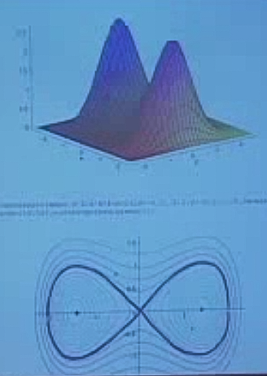
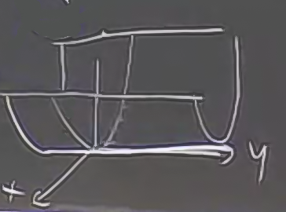

Ders 10
Bugünkü konumuz kritik noktaların minima mı, maksima mı, yoksa eğer noktası mı olduğunu anlama teknikleri. Kritik noktalar kısmi türevlerin hepsinin sıfır olduğu noktadır, mesela 2 değişkenli fonksiyon için $f_x=0$, $f_y=0$ olmalıdır.
3 değişik kritik nokta çeşidi gördük, lokal minima, lokal maksima, ve eğer (saddle) noktaları.
Bir fonksiyonun birden fazla kritik noktası olabilir. Mesela şöyle bir fonksiyon

Soru: Bir kritik noktaya bakarken, hangi kategoriye ait olduğunu nasıl anlayacağız? Bir diğer soru, global (lokal olmayan) minimum ve maksimum noktalarını nasıl buluruz? Üstteki resimdeki fonksiyonda iki lokal maksimum var. Her ikisini de deneyebiliriz, hangisi daha yüksek ise onu alırız. Diğer yandan, bu fonksiyonun minimumu herhangi bir "noktada" değil, maksimumdan uzakta, fonksiyonun en dış yerlerinde, sonsuzlukta.
Yani global minimum ve maksimum illa bir noktada olmayabilir, sonsuzlukta olabilir, o zaman bu koşulu test etmeliyiz, fonksiyonumuzun sonsuzluğa giderken nasıl davrandığını anlamalıyız.
Birinci soruyu cevaplayalım
İkinci Türev Testi
$w = ax^2 + bxy + cy^2$
Bu fonksiyonun kritik noktası orijinde. Eğer türevleri alırsak, ve sıfıra eşitlersek, sonuç $x,y=0$ çıkar. Aynı şekilde eğer $w$'nin lineer yaklaşıksallamasını yapsaydık eşitlik sağındaki bütün terimlerin $x,y$ küçük iken $x,y$'den küçük olduğunu görürüz, o zaman grafiğin teğeti $w=0$ noktasındadır. Eğer orijinden ufak bir adım atarsak, o adımların fonksiyon üzerindeki etkisi kare alma operasyonu yüzünden daha küçülür ($0.001^2 = 0.00001$ mesela). Herhangi bir noktadaki eğim fonksiyon / değişkenlerdeki artış olduğuna göre, orijine yakın olan eğim yukarı doğru neredeyse yok gibidir.
Örnek
$$ w = x^2 + 2xy + 3y^2 $$
Üstteki formülü şu şekilde dönüştürürsek
$$ w = (x+y)^2 + 2y^2 $$
Üstte iki karenin toplamı var, karelerin ikisi de negatif olamaz, o zaman minimum'un orijin olması gerekir (negatifleşmeden olabilecek en küçük değer oradadır).
Birazdan göreceğiz ki üstteki kare tamamlama (completing the square) yöntemini $a,b,c$ katsayılarını içeren genel durum için de kullanabiliriz.
Önce $a \ne 0$ farz etmem lazım, yoksa tekniğin geri kalanı mümkün olmaz.
$$ w = a \bigg( x^2 + \frac{b}{a} xy \bigg) + cy^2 $$
Eğer bir kare denklemin orta teriminde $b/a \ xy$ (üstteki gibi) elde etmek istiyorsam, kare içinde $x$ ve $b/2a \ y$ terimlerini kullanırım, çünkü bu iki terimin birbirleri ile çarpılıp iki kere toplanmaları $b/a \ xy$ sonucunu verir. O zaman
$$ = a \bigg( x + \frac{b}{2a}y \bigg)^2 + ... $$
Hala işimiz bitmedi, kare içine koyulan $y$ yüzünden ortaya çıkan $y^2$ bazlı terimi dengelemek gerekiyor,
$$ = a \bigg( x + \frac{b}{2a}y \bigg)^2 + \bigg( c - \frac{b^2}{4a} \bigg)y^2 $$
$$ = \frac{1}{4a} \bigg[ 4a^2 \bigg( x+\frac{b}{2a}y \bigg)^2 + \bigg(4ac - b^2 \bigg)y^2 \bigg] $$
Bu noktada kontrol etmemiz gereken 3 durum var:
1) $4ac - b^2 < 0 => $ Üstteki ikinci terim negatif, pozitif $y^2$'yi çarpıyor yani negatiflik daha da büyüyor, birinci terim kesinlikle pozitif (çünkü karesi alınmış ifadeler var). Bu durumda bir eğer noktamız var.
2) $4ac - b^2 = 0 => $ İkinci terim yokolur. Geri kalanlar sonucunda fonksiyonumuz sadece bir yönde tanımlı hale gelir, fonksiyonun "dejenere" olduğu söylenir. Mesela $w = x^2$ fonksiyonu böyledir, $y$'ye hiç bağlantı yoktur, alttaki gibi.

Grafikte görüldüğü gibi $y$ yönünde hiçbir değişim olmamaktadır, o yönde pek çok kritik nokta vardır, bu noktalar "dejeneredir".
Ana formülümüzdeki birinci terimde $x$ ve $y$ olması şaşırtıcı gelebilir, orada $x$ ve $y$ olduğu için elimizde dejenere bir durum var, eğer o ifadeleri kullanarak yeni bir eksen sistemi yaratsaydım, o yönde hiçbir değişiklik olmadığını görürdüm.
3) $4ac - b^2 > 0 => $ Bu durumda üstteki formülde, kareli ifadeler
$$w = \frac{1}{4a} \bigg[ + .. \bigg( .. \bigg)^2 + \bigg( .. \bigg) \bigg] $$
hep $>0$ demektir, bu durumda elimizde ya bir maksimum ya da bir minimum var. İşler $a$'ya göre değişecek, o zaman onun işaretine bakarız.
Eğer $a > 0$ bir minimum vardır
Eğer $a < 0$ bir maksimum vardır
[bazı bölümler atlandı]
Genel olarak maks, min işlemleri için 2. türevlere bakmak gerekir.
Kaç türlü kısmi türev vardır? Mesela bir kez $x$'e göre kısmi türev alabilirim, sonra elde ettiğim fonksiyonun bir daha $x$'e göre türevini alırım.
$$ \frac{\partial f^2}{\partial x^2} = f_{xx}$$
Ya da
$$ \frac{\partial f^2}{\partial x \partial y} = f_{xy} $$
Ya da
$$ \frac{\partial f^2}{\partial y \partial x} = f_{yx} $$
Burada bir iyi haber şu: Üstteki iki kısmi türev birbirine eşit, yani $f_{xy} = f_{yx}$.
Ve en son olarak
$$ \frac{\partial f^2}{\partial y^2} = f_{yy}$$
- Türev Testi
$f$'in kritik noktası $x_0,y_o$'da $A = f_{xx}(x_o,y_o)$, $B = f_{xy}(x_o,y_o)$, $C = f_{yy}(x_o,y_o)$ ise, o zaman
$$ AC - B^2 > 0 $$
hesabına bakılır. Bu hesabın da 2 tane alt seçeneği vardır.
$A > 0$ ise lokal minimum.
$A < 0$ ise lokal maksimum.
$$ AC - B^2 < 0 $$
hesabı var ise, elimizde bir eğer noktası vardır.
$$ AC - B^2 = 0 $$
işe hiçbir sonuca varamayız. Bir şekilde dejenere olduğunu biliriz, ama nasıl bir kritik nokta olduğunu bilemeyiz.
Şimdi formülümüz $w = ax^2 + bxy + cy^2$ üzerinde bulduğumuz özel şartı kısmi türevler ile doğrulayıp doğrulayamayacağımıza bakalım.
$$ w_{x} = 2ax + by$$
$$ w_{xx} = 2a$$
$$ w_{xy} = b$$
$$ w_{y} = bx + 2cy $$
$$ w_{yx} = b $$
O zaman
$$ A = 2a $$
$$ B = b $$
$$ C = 2c $$
$$ AC - B^2 = 4ac - b^2 $$
Gördüğümüz gibi $4ac - b^2$ tekrar elde ettik, yani ilk başta kare tamamlayarak elde ettiğimiz irdelemeleri aynen kullanabiliriz.
Tabii dejenere konumda hala ne yapılacağını bilmiyoruz. O durum için de Taylor Yaklaşıksallamasını kullanacağız.
Karesel yaklaşıksallama
$$ \Delta f \approx f_x (x - x_0) + f_y (y - y_0) $$
Fakat kritik noktalarda $f_x = f_y = 0$ olduğunu hatırlarsak, o zaman üstteki ifadede tüm terimler iptal (sıfır) olur. Bu işimize yaramaz. Daha fazla terim eklememiz lazım.
$$ \Delta f \approx f_x (x - x_0) + f_y (y - y_0) $$ $$ + \frac{1}{2}f_{xx}(x-x_0)^2 + f_{xy}(x-x_0)(y-y_0) + \frac{1}{2}f_{yy}(y-y_0)^2 $$
Bu durumda genel durum (case) karesel duruma indirgenmiş olur. Üstteki formülde
$$ \Delta f \approx f_x (x - x_0) + f_y (y - y_0) $$ $$ + \underbrace{\frac{1}{2}f_{xx}}_{1/2 A = a}(x-x_0)^2 + \underbrace{f{xy}}_{B=b}(x-x_0)(y-y_0) + \underbrace{\frac{1}{2}f{yy}}_{1/2 C = c}(y-y_0)^2 $$
kullanilabilir.
Dejenere durumda ne olacağı daha yüksek türevlere bağlıdır. Biz bu derste o konuya girmeyeceğiz.
Fakat şunu söylemek gerekir ki
$$ AC - B^2 = 0 $$
şartının ortaya çıkması, yani "sonuca varamıyoruz" noktasına gelmek gerçek hayatta pek olmuyor.
Örnek
$$ f(x,y)= x + y + \frac{1}{xy}, \ \ x,y > 0 $$
Min, maks nedir?
Kritik noktaları bulalım.
$$ f_x = 1 - \frac{1}{x^2y} = 0$$
$$ f_y = 1 - \frac{1}{xy^2} = 0$$
$$ x^2y = 1 $$
$$ xy^2 = 1 $$
İkinci formül birinciyi bölerse,
$$ x/y = 1 $$
yer değiştirince
$$ x = y => x = 1 $$
$$ y^3 = 1 => y = 1 $$
Tek kritik nokta $(1,1)$
Soru
Bu nokta
- Lokal minimum
- Lokal maksimum
- Eğer noktası
- ???
Cevaplayın.
Cevap için 2. kısmi türevleri hesaplayalım.
$$ f_{xx} = \frac{2}{x^3y} $$
$$ A = 2 $$ $$ f_{xy} = \frac{1}{x^2y^2} $$
$$ B = 1 $$
$$ f_{yy} = \frac{2}{xy^3} $$
$$ C = 2 $$
$$ AC - B^2 = 2 \cdot 2 - 1^2 = 3 > 0 $$
Demek ki bu ya bir lokal min, ya da lokal maks.
$$ A > 0 $$
o zaman bu lokal min. Hatta bunun bir global min olduğunu da kontrol etmek mümkün.
Ya peki lokal maksimum?
Maksimum herhangi bir kritik noktada değil, maksimum sonsuzlukta.
$x \to \infty$, ya da $y \to \infty$, ya da $x,y \to 0$ iken, $f \to \infty$.
Genelde üstteki kontrolleri yapmak gerekir, neler olduğunu anlamak için önce kritik noktalara bakılır, sonra sınırlarda (boundaries) neler olduğuna bakılır.
Yukarı